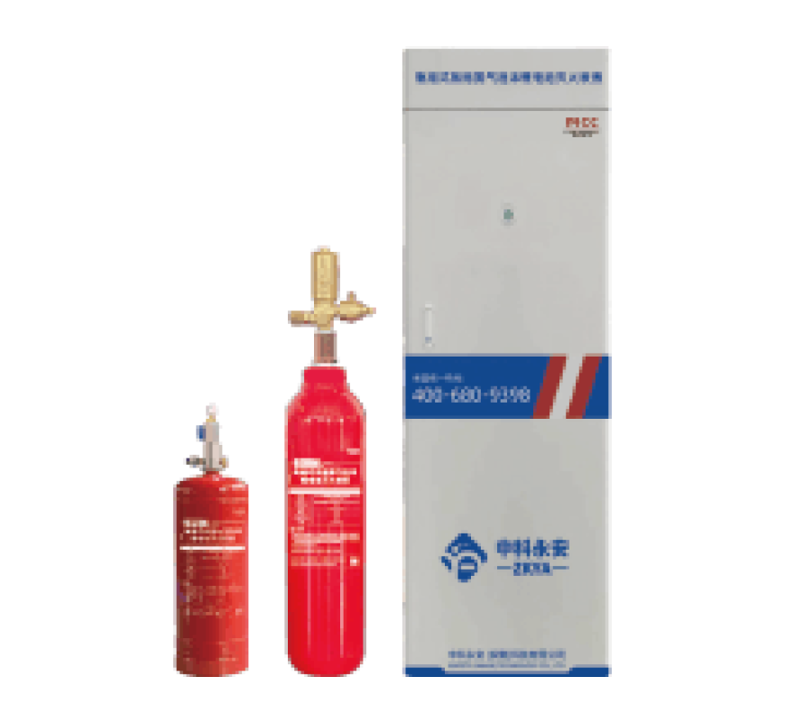

Cylinder · N₂ + Foam
Cylinder-Type Compressed-Nitrogen Foam Extinguisher (Lithium)
Positive-pressure three-phase gas/liquid foam technology mixes our lithium-specific foam concentrate with compressed nitrogen to form an efficient, stable, environmentally acceptable suppression medium. Fast cooling, smoke absorption, radiation blocking, sustained suppression.
Configurations: 3 L · 6 L · 30 L · larger on request